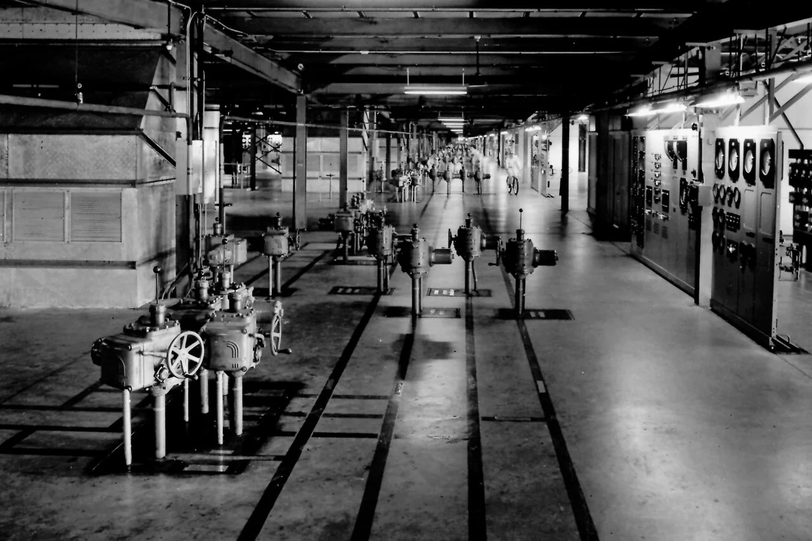
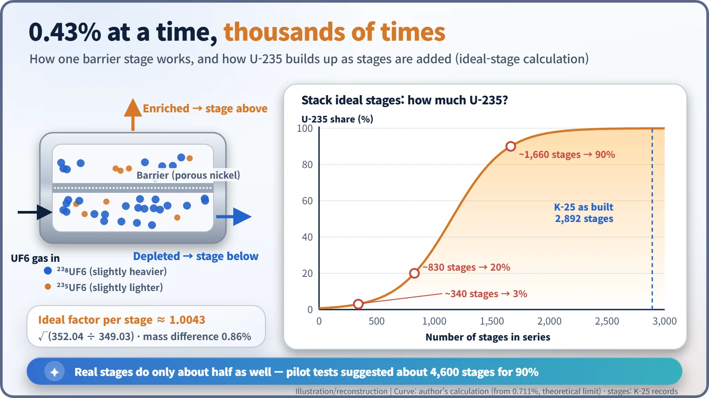
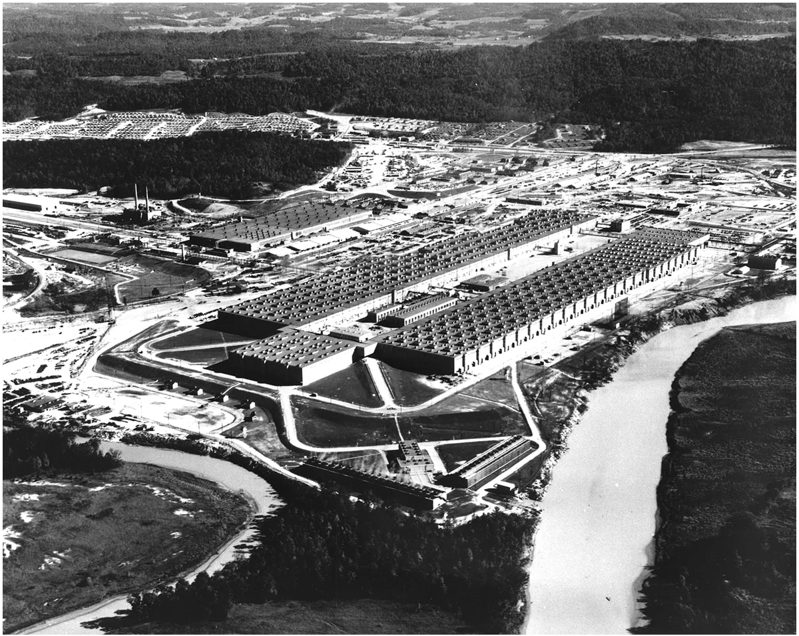
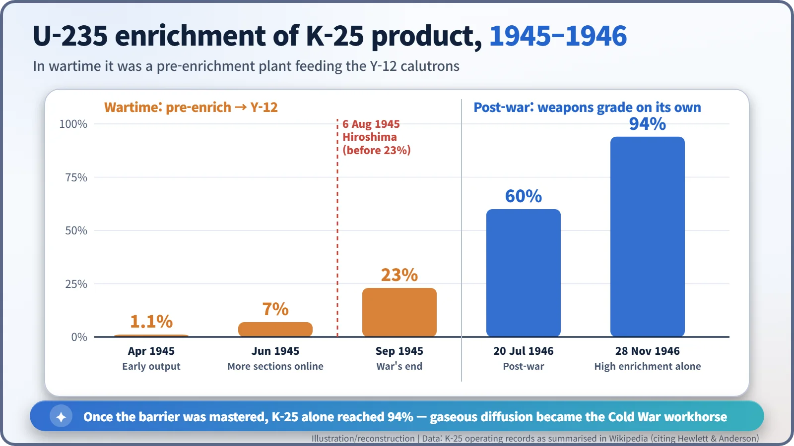

Nuclear History · 103
Bicycles on the Factory Floor — K-25, the Half-Mile Gaseous Diffusion Plant
A half-mile U-shaped building turned a 0.43% gain per stage into weapons-grade uranium by sheer repetition, once its barrier problem was solved.
At Oak Ridge, Tennessee, the Manhattan Project built K-25, a four-storey, U-shaped gaseous diffusion plant about half a mile long, then the largest building in the world. It squeezed uranium hexafluoride gas through porous nickel barriers in 2,892 stages, each gaining at most about 0.43%. In wartime it pre-enriched feed for the Y-12 calutrons; by November 1946 it reached 94% on its own.
Bicycles on the factory floor
Would you believe that people rode bicycles inside a factory? In 1945, in one building at Oak Ridge, Tennessee, it was routine. The chemist Joe Dykstra later remembered: "every operator and every engineer had a bicycle, because there were so many miles of traveling during the day." The building was called K-25. The "K" stood for Kellex, the company that designed and built it; "25" was wartime shorthand for uranium-235. [3]

How to catch a 0.43% difference
The uranium-235 needed for a bomb makes up only 0.72% of natural uranium. The other 99-plus percent is uranium-238, which behaves identically in chemistry, so no chemical reagent can tell the two apart. The only handle is a tiny difference in mass.
Gaseous diffusion exploits that difference. Uranium is combined with fluorine to make a gas, uranium hexafluoride (UF6), which is then pushed against a metal sheet riddled with microscopic holes, the "barrier". At the same temperature, lighter molecules move slightly faster, so the gas that slips through the holes is very slightly richer in U-235. Chemists know this as Graham's law: a gas leaks through a tiny opening at a rate inversely proportional to the square root of its molecular mass. The two molecules differ in mass by just 0.86%, and the best a single pass can do, in theory, is a gain of about 0.43% (an ideal separation factor of roughly 1.0043).
The answer, then, was repetition. Gas that passes the barrier goes up to the next stage; gas that does not is sent back down. Link thousands of stages in series and you have a cascade. Even with ideal stages, getting to 90% takes more than 1,600 of them. Real stages achieve only about half of the ideal effect, and pilot tests suggested that about 4,600 stages would be needed. [6]

Building the plant before the barrier existed
Remarkably, when K-25 was authorised in late 1942, nobody had yet produced any enriched uranium by this method. John R. Dunning (1907–1975) of Columbia University led the research. The engineering firm M. W. Kellogg signed its contract on 14 December 1942 and set up a separate, secretive subsidiary, Kellex, headed by Percival C. Keith (1900–1976). [1]
Work on the main plant began on 20 October 1943. The four-storey, U-shaped building was about 0.8 km (half a mile) long and about 305 m (1,000 ft) wide, and on completion it was the largest building in the world. A coal-fired power station was built just to feed it; its 14 turbine generators had a combined output of 238,000 kW. [2]

The real trouble was the heart of the process: the barrier. In 1943 the front-runner was a nickel barrier developed by Edward Norris and Edward Adler, but its quality was erratic. A Department of Energy history puts it bluntly: "the uranium gas was simply too corrosive, the necessary tolerances too fine." On 16 January 1944, General Leslie Groves decided to switch to a powdered-nickel barrier developed by Kellex's Johnson. The barrier factory in Decatur, Illinois, run by a company best known for car shock absorbers, was stripped and re-equipped for the new type. Even in April 1944, only 45% of the pilot production passed inspection. [1] [4]
A supporting role instead of the lead
The barrier delays changed the plan. In late summer 1943 it was decided that K-25 would not try to make weapons-grade uranium on its own; instead it would raise the enrichment part of the way and pass the product to the Y-12 calutrons (electromagnetic separators) for finishing. Production began in February 1945, and the first product went to the calutrons in March. The enrichment of K-25's output rose from 1.1% in April to 7% in June and 23% in September 1945. [1] [6]

So the popular line that "K-25 made the uranium for the Hiroshima bomb" is not accurate. The bomb was dropped on 6 August 1945, before K-25 reached 23%, and the final enrichment of the Little Boy uranium was done at Y-12. K-25 was the supporting actor that pre-enriched the feed and eased the calutrons' load.
In May 1945 the site had 25,266 people, counting construction workers. Colleen Black, a leak detector, hunted for pinholes along hundreds of miles of pipe. "We did not know where they were going or what they were going to do," she recalled. Yet because the process ran continuously, it needed surprisingly few operators: Dykstra said he ran the whole U building with "one foreman on each shift" and "five operators". The total cost, together with the neighbouring K-27 unit, came to about $480 million. [3] [6]
A demolished giant, a lasting lesson
Once the barrier was mastered, K-25 could do the job alone after the war. It reached 94% enrichment on 28 November 1946, and the era of the calutrons faded. Gaseous diffusion became the backbone of American enrichment through the Cold War and finally stopped on 27 August 1985. The ageing U-shaped building was torn down, its last section in December 2013, and today the K-25 History Center keeps its memory near the original footprint. [2]
The lesson of K-25 is simple. A difference of 0.43%, repeated thousands of times, can change the world. And what made that repetition possible was a sheet of metal with, as one Oak Ridge historian put it, hundreds of millions of holes in an area the size of a thumbnail. [3]